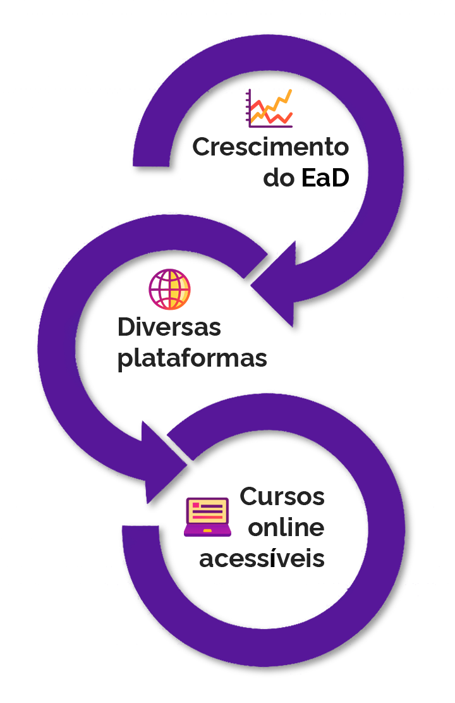
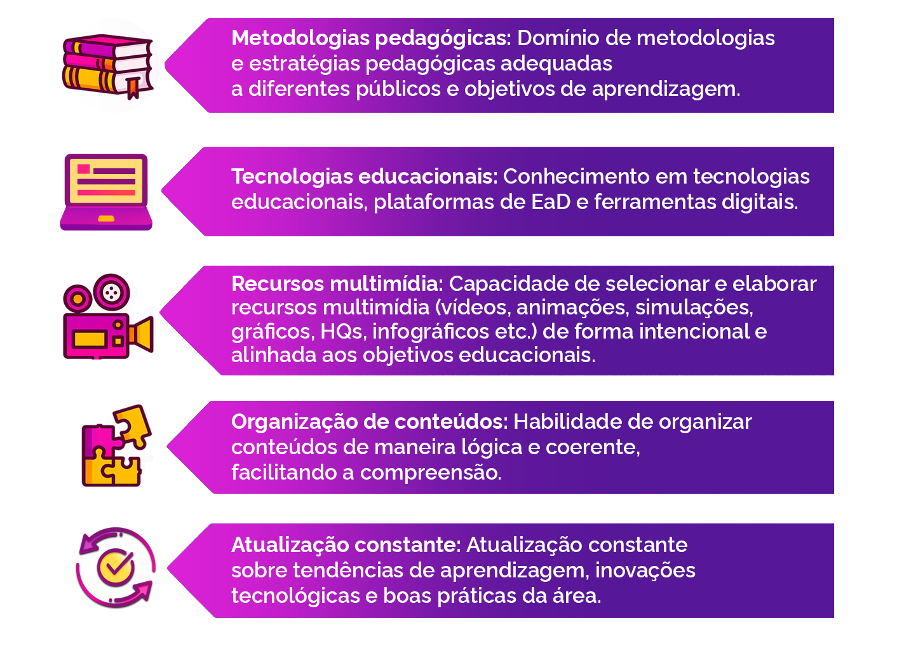
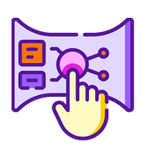
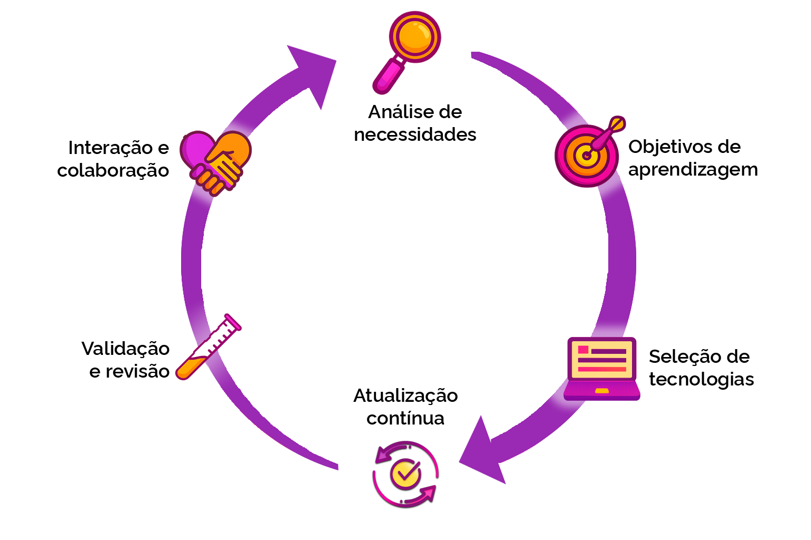
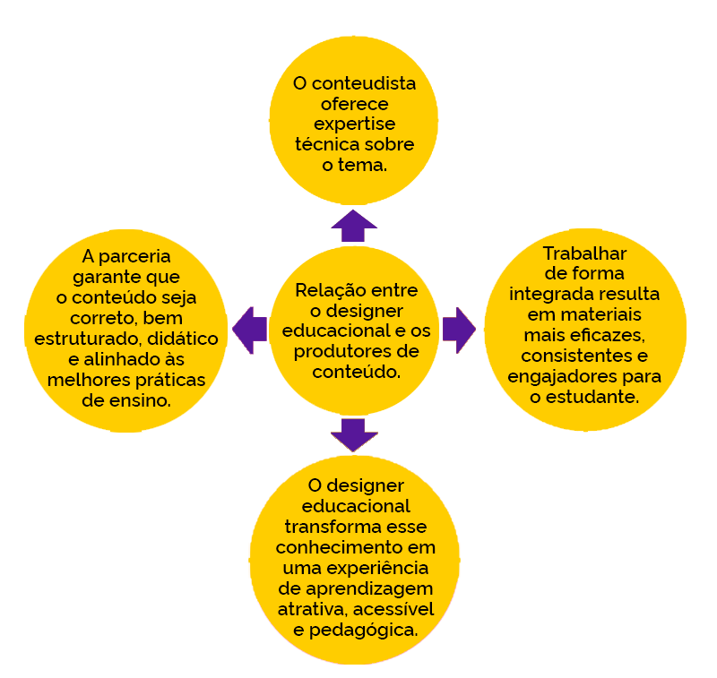
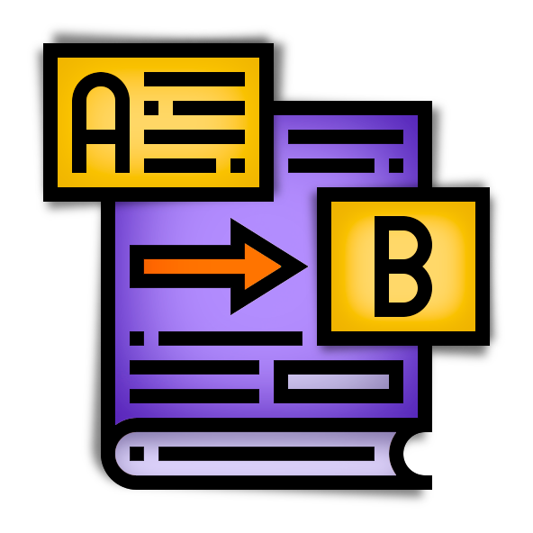
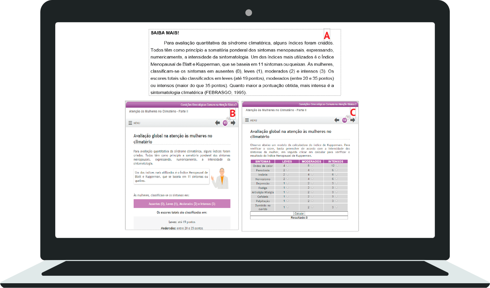
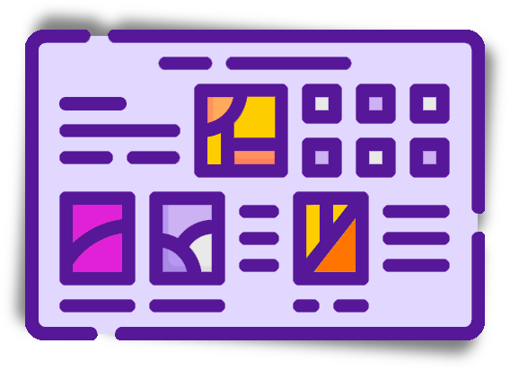
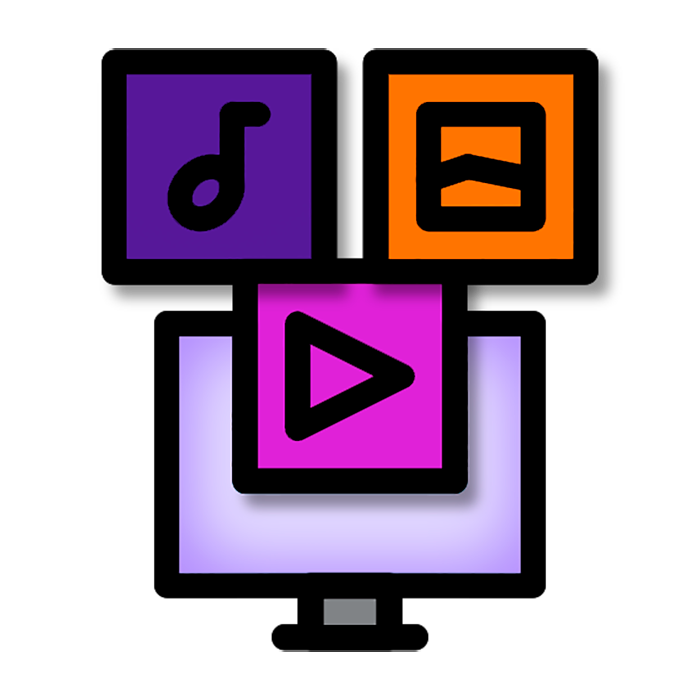
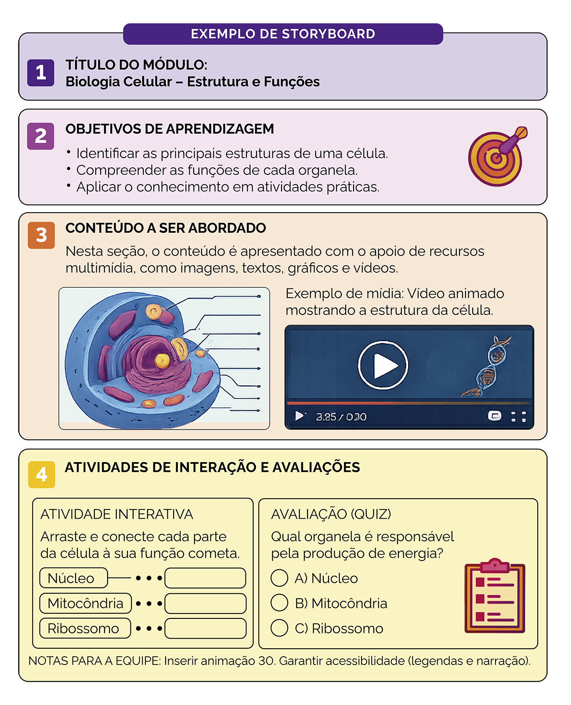

A criação de storyboards e a relação
com o Designer Educacional
Seja bem-vindo e bem-vinda!
A seguir veja algumas informações importantes sobre esta aula.
Objetivos de aprendizagem
Ao final desta aula você poderá:
Reconhecer o trabalho de transposição didática realizado pelo Designer Educacional/Instrucional.
Reconhecer a linguagem e estrutura de um storyboard.
Identificar as etapas de validação/revalidação da arquitetura pedagógica das aulas.
Introdução
Na aula anterior você conheceu mais detalhadamente as etapas de produção e todos os procedimentos que antecedem a entrega do material bruto de um curso autoinstrucional. Igualmente, reconheceu a importância de observar os prazos para seleção e entrega de conteúdo objetivando manter a fluidez do processo de formação.
Nesta aula vamos conhecer um pouco mais sobre o trabalho do Designer Educacional/Instrucional. Assim, para compreender as habilidades envolvidas, entra em cena o processo de transposição didática que apresentaremos nesta aula e aprofundaremos na primeira aula do módulo II. Para finalizar, analisaremos como se dá essa construção das aulas na parceria entre conteudistas e designers com vistas a oferecer a melhor experiência de aprendizagem possível em cursos autoinstrucionais.
Ao final da aula você será capaz de articular a sua produção de conteúdo com o trabalho de design educacional, fundamental para a formação e o engajamento dos estudantes.
O trabalho de Design Educacional/Instrucional
Nos últimos anos, sobretudo no período pós-pandêmico de covid-19, a educação a distância se tornou modalidade de ensino essencial no cenário educacional. Com o avanço da tecnologia, cursos online têm se espalhado por várias plataformas, oferecendo uma variedade de opções para o aprendizado.
Nesse contexto, o designer educacional ganha destaque como um profissional indispensável para garantir que esse processo de ensino-aprendizagem seja bem-sucedido.

Este profissional simplifica conteúdos complexos para tornar o aprendizado mais fácil e natural:
Na transposição didática dos conteúdos, transformando informações técnicas em material compreensível e pedagógico.
Na criação de storyboards e estruturação da arquitetura pedagógica das aulas.
No planejamento de experiências de aprendizagem que promovam engajamento, compreensão e eficácia.
Na integração da pedagogia, tecnologia e design para a construção de ambientes de aprendizagem interativos, acessíveis e significativos.
Ao desenvolver um curso online, o designer educacional não apenas organiza o conteúdo de forma lógica, mas também precisa reunir um conjunto diverso de habilidades que integram pedagogia, criatividade e domínio tecnológico.
fonte: Freepik.com
Competências do Designer Educacional/Instrucional

A seguir, apresentamos alguns dos principais recursos de aprendizagem utilizados em Design Educacional/Instrucional para potencializar a experiência de aprendizagem.
Recursos audiovisuais
Vídeos explicativos.
Videoaulas.
Vídeos animados.
Microvídeos (pílulas de aprendizagem).
Vídeos demonstrativos.
Recursos visuais e gráficos
Imagens ilustrativas.
Diagramas.
Gráficos.
Mapas conceituais.
Infográficos.
Linha do tempo visual.
Recursos sonoros
Podcasts educativos.
Áudios explicativos.
Depoimentos em áudio.
Narrações guiadas.

Recursos interativos e experienciais
Simulações.
Estudos de caso interativos.
Cenários de tomada de decisão.
Laboratórios virtuais.
Ambientes simulados.
Recursos avaliativos
Quizzes.
Questionários.
Exercícios práticos.
Atividades de fixação.
Avaliações diagnósticas.
Avaliações formativas.
Recursos narrativos e culturais
Histórias em quadrinhos (HQs).
Storytelling educativo.
Narrativas baseadas em casos reais.
Dramatizações.
Além das competências já mencionadas, o designer educacional/instrucional desempenha diversas atribuições essenciais para o sucesso de um curso online que abrangem todas as etapas do planejamento e desenvolvimento de cursos, garantindo coerência, qualidade e impacto pedagógico.

Análise de necessidades: Realiza análise de necessidades para identificar lacunas de conhecimento e definir as habilidades que os estudantes devem desenvolver.
Objetivos de aprendizagem: Elabora objetivos de aprendizagem claros e mensuráveis.
Seleção de tecnologias: Seleciona e integra recursos tecnológicos adequados, garantindo que plataformas e ferramentas sejam acessíveis e funcionais.
Interação e colaboração: Cria estratégias para promover interação entre estudante-conteúdo e entre os próprios estudantes.
Validação e revisão: Valida materiais, revisa conteúdos e aperfeiçoa continuamente os métodos e objetos de aprendizagem.
Atualização contínua: Garante que o curso permaneça relevante em um cenário de constante evolução tecnológica e educacional.
Lembramos ainda da importância da relação entre o designer educacional e os produtores de conteúdo para cursos autoinstrucionais. Enquanto o conteudista possui expertise no tema abordado e é responsável por elaborar o conteúdo técnico, o designer educacional traz conhecimento sobre métodos pedagógicos, estratégias de ensino e a melhor forma de apresentar esse conteúdo de maneira acessível e engajadora.
Relação entre o designer educacional e os produtores de conteúdo

Exemplo
Ao desenvolver um curso sobre saúde pública, por exemplo, o conteudista pode fornecer dados e teorias atualizadas, enquanto o designer educacional pode transformar esses elementos em uma narrativa coesa, utilizando recursos multimídia e atividades interativas que facilitam a aprendizagem.
Juntos, eles criam um ambiente educacional que não apenas transmite informações, mas também estimula a reflexão crítica, a interação e a prática, promovendo um aprendizado mais significativo e duradouro.
A capacidade do designer de transformar conteúdo teórico em experiências práticas e envolventes é fundamental para manter a motivação dos estudantes e garantir que os objetivos de aprendizagem sejam alcançados.
Transposição didática e criação de storyboard
A transposição didática é prática fundamen-
tal no campo da educação, especialmente
quando utilizada em áreas que lidam com
temas complexos, como saúde, por exemplo.
O processo de transposição envolve adaptar
conteúdos teóricos e técnicos para forma-
tos que sejam mais acessíveis e didáticos,
permitindo que os estudantes compreen-
dam e apliquem o conhecimento de forma
eficaz. O designer educacional desempe-
nha papel central nessa transformação, uti-
lizando princípios pedagógicos que garan-
tem clareza e eficácia ao material didático.

A transposição didática é um processo essencial na elaboração de cursos online autoinstrucionais, pois envolve adaptar conteúdos brutos, que frequentemente são teóricos e complexos, para formatos que sejam mais acessíveis e didáticos. Esse processo começa com a identificação do conteúdo central que precisa ser ensinado, que pode incluir teorias, dados, conceitos e práticas.
A transposição didática não se limita a simplesmente simplificar a linguagem ou dividir o conteúdo em seções pequenas, uma vez que exige que o designer educacional avalie quais aspectos do conteúdo são mais relevantes e significativos para os estudantes.
Essa escolha deve levar em consideração o público-alvo, seus níveis de conhecimento prévio e as habilidades que necessitam desenvolver. É nesse contexto que a transposição didática exige habilidades complexas, pois o profissional precisa transformar informações brutas em aprendizagens significativas, de modo a permitir que os estudantes não apenas absorvam o conhecimento, mas também que o apliquem em situações práticas. No módulo II você terá a oportunidade de aprofundar ainda mais as características do processo de transposição didática. Segue adiante um exemplo de como essa transposição pode ser realizada.

Exemplo de transposição didática do DE. A - Texto-base em formato Word (conteúdo de Saiba Mais);
B e C - Página final do livro multimídia, utilizando-se recurso interativo. Fonte: UNA-SUS/UFMA (2017).
Uma vez que o conteúdo foi cuidadosamente transformado, o próximo passo é organizá-lo em um storyboard que você verá a seguir.
Criando storyboard

O storyboard funciona como um roteiro visual que orienta a estrutura do curso. Ele permite ao designer educacional planejar a sequência de exposições e atividades, organizando o conteúdo em módulos coesos e lógicos. Cada quadro do storyboard pode incluir não apenas o texto que será apresentado, mas também indicações quanto ao uso de elementos multimídia, interações e avaliações.
Exemplo
Ao desenvolver um curso sobre práticas de primeiros socorros, um storyboard pode, por exemplo, descrever a introdução com um vídeo demonstrativo, seguido de uma atividade de reflexão, e então uma simulação interativa por meio da qual os estudantes praticam as habilidades aprendidas.
Essa organização visual facilita a visualização do fluxo do curso e serve como guia para o desenvolvimento de recursos didáticos específicos.
Finalmente, a transposição didática para storyboards permite revisão contínua e aprimoramento do material pedagógico antes da implementação do curso. Durante essa etapa, o designer educacional pode solicitar feedback de outros especialistas e do próprio conteudista para garantir que o conteúdo esteja não apenas correto em termos técnicos, mas também otimizado para a aprendizagem. Esse processo colaborativo é essencial, pois ele ajuda a identificar áreas que podem estar sobrecarregadas de informações ou apresentando uma sequência de atividades pouco claras. Após as revisões, o storyboard pode ser usado como base para a produção de conteúdos, garantindo que todos os elementos abordados estejam alinhados com os objetivos de aprendizagem definidos. Dessa forma, a transposição didática não apenas enriquece o conteúdo bruto, mas também fornece uma estrutura didática que facilita a experiência de aprendizado em cursos online autoinstrucionais.
<saibamais>
Assista ao vídeo sobre a História das Epidemias com Leandro Karnal.
</saibamais>
Exemplo de storyboard com indicação de recurso saiba mais. Fonte: Campus Virtual Fiocruz (2026).
Linguagem e estrutura de um storyboard
O storyboard é uma ferramenta fundamental no desenvolvimento de cursos online autoinstrucionais, servindo como um guia visual que organiza o conteúdo e define a sequência das atividades de aprendizagem.
A linguagem de um storyboard deve ser clara e objetiva, de modo a permitir que todos os envolvidos no projeto compreendam as intenções didáticas e os objetivos de aprendizagem de cada módulo.
Além disso, o storyboard deve conter uma descrição detalhada de cada componente do curso, incluindo o conteúdo a ser apresentado, as interações propostas e os recursos multimídia a serem utilizados. Essa linguagem deve ser acessível, focando na explicação das etapas sem jargões excessivos, para que tanto designers educacionais quanto conteudistas possam colaborar efetivamente.
Na estrutura de um storyboard, cada quadro ou cena representa uma parte específica do curso. Geralmente, um quadro é dividido em seções que incluem:
Título do módulo
Objetivos de aprendizagem
Conteúdo a ser abordado
Atividades de interação e as avaliações
A parte superior do quadro pode conter o título e objetivos, enquanto o meio deve focar no conteúdo informativo, com imagens, texto e gráficos que serão usados. Na parte inferior, é comum incluírem-se notas sobre como os estudantes irão interagir com o material, seja por meio de quizzes, discussões em fóruns ou exercícios práticos. Um glossário pode ser adicionado ao final de cada módulo, explicando termos técnicos ou conceitos-chave que surgem ao longo do conteúdo, facilitando a compreensão contínua dos estudantes. O uso desse recurso é especialmente importante em áreas complexas, como Saúde ou Tecnologia, pois a terminologia pode ser um obstáculo para a aprendizagem.
Um dos principais recursos utilizados em um storyboard é a incorporação de elementos multimídia, que pode incluir vídeos explicativos, animações, infográficos e audioaulas que ajudam a ilustrar conceitos importantes e a manter os estudantes engajados. O storyboard deve especificar onde esses elementos serão inseridos, como em um determinado módulo, e qual será seu papel didático — se servirá para introduzir novos conceitos, exemplificar o conteúdo ou reforçar o aprendizado. Por exemplo, ao tratar de um conceito complexo, como Biologia Celular, o storyboard pode sugerir um vídeo animado que mostre a estrutura da célula, seguido de uma atividade interativa em que os estudantes arrastem e conectem partes da célula a suas funções, promovendo uma interação significativa.

Observe o exemplo a seguir: ele apresenta como um quadro de storyboard pode ser organizado na prática. Perceba como os elementos — título, objetivos, conteúdo, recursos multimídia e atividades — estão distribuídos de forma integrada. Note também como os recursos visuais e interativos são planejados para apoiar a compreensão do conteúdo e orientar a experiência do estudante ao longo do módulo.

Agora que você já viu como um storyboard é estruturado, vamos explorar um dos elementos que o torna ainda mais potente: os recursos multimídia.
Vídeos explicativos ajudam a demonstrar processos.
Animações facilitam a compreensão de temas complexos.
Infográficos organizam informações de forma visual.
Áudios podem reforçar conceitos ou trazer explicações complementares.
Além disso, pode-se incluir uma seção “Saiba Mais” que leve os estudantes a recursos adicionais, como artigos, estudos de caso ou vídeos aprofundados, proporcionando espaço para a exploração mais profunda dos temas abordados.
<saibamais>
Situação epidemiológica - óbitos por Febre maculosa. Brasil, Regiões e Unidades Federadas (Infecção) 2007-2023.
Exemplo do recurso saiba mais no html do curso. Fonte: Campus Virtual Fiocruz (2026).
Outro recurso importante que pode ser integrado ao storyboard é a inclusão de avaliações formativas e somativas.
É essencial que as avaliações sejam planejadas com antecedência e que estejam alinhadas aos objetivos de aprendizagem.
O storyboard deve detalhar o tipo de avaliação (quiz de múltipla escolha, estudo de caso, reflexão escrita etc.), os critérios de avaliação e quando essas avaliações serão aplicadas no decorrer do curso. Caso a opção seja quiz de múltipla escolha, o material enviado deverá conter feedback das questões corretas e incorretas. Para enriquecer ainda mais a experiência de aprendizagem, boxes de reflexão podem ser utilizados ao longo do curso, incentivando os estudantes a pensar criticamente sobre o que aprendem e a conectar o conteúdo com suas próprias experiências.
Por exemplo, após um módulo que aborda as bases da nutrição, o storyboard pode prever um quiz que permita aos estudantes testar seu entendimento sobre os princípios discutidos e um box de reflexão que os leve a pensar sobre como aplicar esse conhecimento em suas próprias vidas, facilitando, assim, a reflexão crítica e permitindo que identifiquem áreas que precisam de mais atenção.
Em suma, a linguagem e a estrutura de um storyboard para cursos online autoinstrucionais são vitais para a organização e a clareza do material didático. A partir de quadros bem definidos, que incluem objetivos, conteúdo, interações e avaliações, o designer educacional consegue planejar uma experiência de aprendizagem coesa e envolvente. A utilização de recursos multimídia e atividades interativas é essencial, não apenas para enriquecer o conteúdo, mas igualmente para facilitar a retenção do conhecimento pelos estudantes.
Validação do storyboard e ajuste pós-lançamento
A validação do storyboard e o ajuste pós-lançamento são processos essenciais que envolvem colaboração entre designers educacionais e conteudistas. Essa parceria é primordial para garantir que o conteúdo de aprendizagem não apenas esteja correto, mas também para que seja apresentado de maneira que maximize a eficácia educacional. O designer educacional traz sua experiência em metodologias de ensino e interações, enquanto o conteudista assegura a precisão e a relevância do conteúdo técnico.
Exemplo
Ao desenvolver um curso online sobre manejo de diabetes, o designer pode criar um storyboard que inicialmente descreve os módulos de aprendizagem, interações e avaliações, enquanto o conteudista deve revisar o material a fim de garantir que informações complexas, como os diferentes tipos de insulina e suas aplicações, estejam corretamente representadas.
Após a fase inicial de elaboração, a validação do storyboard se torna uma prática colaborativa crítica. Essa etapa pode envolver a realização de reuniões regulares entre designers e conteudistas, quando cada parte revisa o conteúdo apresentado, discute as estratégias de ensino e identifica áreas que necessitam de ajustes.
Exemplo
Ao criar um módulo sobre reanimação cardiopulmonar (RCP), o designer pode sugerir o uso de vídeos interativos e simulações, enquanto o conteudista pode trazer, por exemplo, sugestões sobre a inclusão de diretrizes atualizadas da American Heart Association. Essa interação garante que o storyboard não apenas atenda a padrões educacionais, mas que da mesma forma incorpore as melhores práticas e a pesquisa mais recente disponível na área a que se destina.
O ajuste pós-lançamento ocorre após a implementação do curso, com o objetivo de avaliar sua eficácia prática. Nessa fase, são coletados dados sobre como os estudantes interagem com o conteúdo e quais estratégias de ensino funcionam melhor.
Exemplo
Um curso sobre anatomia humana pode ser testado em um pequeno grupo de estudantes, e suas reações a recursos como animações e quizzes podem ser analisadas em conjunto pelos designers e conteudistas. Com base no feedback, ajustes podem ser feitos no html para torná-lo mais alinhado com a experiência real dos estudantes. Isso não apenas melhora o curso em si, mas também fortalece a colaboração entre as duas partes, estabelecendo uma comunicação contínua sobre as necessidades pedagógicas. Essa é uma etapa opcional, dependendo do tempo e acesso ao campo que designers e conteudistas terão.
Por fim, o ajuste contínuo é essencial em um campo como a Saúde, em que novas informações e práticas estão sempre emergindo. Assim, designers educacionais e conteudistas devem manter um ciclo de feedback em andamento, revisitando os cursos regularmente para assegurar que o material esteja atualizado e em conformidade com novas evidências ou diretrizes.
Exemplo
Foram publicadas novas pesquisas sobre a eficácia de tratamentos para doenças cardiovasculares, de modo que a equipe pode revisar um curso sobre Farmacologia para incluir as novas informações. Essa prática não só enriquece a experiência de aprendizagem dos estudantes, mas também garante que o curso se mantenha relevante e alinhado com as necessidades da prática profissional, assegurando que profissionais da área estejam sempre bem preparados para atuar em sua área — lembrando que uma das principais características desses cursos é a qualificação em serviço.
Perceba o passo a passo do material do curso até o ajuste pós-lançamento.
Recebimento do material bruto1
Elaboração do Storyboard2
Validação do Storyboard pelo conteudista3
Revisão do texto4
Produção designer gráfico5
Webdesigner produz o html do curso6
Analista insere o curso no Moodle7
Lançamento do curso8
Ajuste pós-lançamento9
Você chegou ao final da terceira aula do Módulo 1
Nesta aula você reconheceu o trabalho do designer educacional, apropriou-se do conceito de transposição didática e identificou as principais características da linguagem utilizada na elaboração de um storyboard.
Ao longo deste módulo você construiu uma noção abrangente sobre a modalidade de ensino em EaD e as peculiaridades de cursos autoinstrucionais ambientados em plataformas online, passando pela estrutura do fluxo de produção, pela elaboração do conteúdo bruto até a elaboração de storyboard.
No próximo módulo vamos aprofundar a discussão sobre a criação de material didático digital, seu histórico e sua aplicabilidade na modalidade EaD. Não perca!
Conferindo a aprendizagem
Questão 1
Objetivo: Reconhecer a importância trabalho de transposição didática realizado pelo designer educacional/instrucional.
O designer educacional é importante na construção de cursos online, atuando na transposição didática e na criação de experiências significativas de aprendizagem. Sua parceria com o conteudista garante fluidez, acessibilidade e engajamento aos materiais desenvolvidos. Das alternativas a seguir, qual melhor descreve o papel do designer educacional em cursos autoinstrucionais?
Questão 2
Objetivo: Reconhecer a linguagem e a estrutura de um storyboard.
O storyboard é uma ferramenta que estrutura a sequência pedagógica de um curso. Ele orienta a criação de conteúdos, atividades, recursos multimídia e avaliações, sendo fundamental para transformar conteúdos brutos em experiências educacionais coesas. Assinale a alternativa que representa corretamente o papel do storyboard no processo de produção de cursos autoinstrucionais: